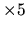
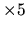

| Numeric Puzzles Again! |
A different and exciting game is invading all the toy stores around Latin America. It looks the same as a children's jigsaw, but the pieces are constructed entirely using numbers...
The pieces may have non-uniform shapes, but they all must construct a perfect
 image. For instance, a 5 
image may be this:
image. For instance, a 5 
image may be this:
11223 11223 12233 11233 11133
Made with three pieces:
11 11 1 11 111 22 22 22 2 3 3 33 33 33
Your problem is to write a program that solves the puzzle using the apropriate pieces.
Notice that once a solution is found, it can be rotated, giving rise to three other solutions. However, a given piece must not be rotated separately in order for you to solve the puzzle.
In addition to the four rotations, a puzzle may have more than one ``true'' solution. You may assume, though, that none of test cases will contain a puzzle with more than one true solution.
Blank spaces may be used at the beginning of a line and within the pieces in order to define the piece's shape.
Each instance ends with a line containing only the # character. The input file ends with a line containing only the integer 0 (zero).
2 2 3 2 3 3 1 1 3
the sums are: 223 + 233 + 113 = 569, 333 + 231 + 221 = 785, 311 + 332 + 322 = 965 and 122 + 132 + 333 = 587. Thus the right puzzle is
3 1 1 3 3 2 3 2 2
The output of each instance must end with a blank line.
7 6 3333 33 3333 33 33 7 7 7 7 7777 88888 6 666 66 22 222 2 5 55 55 555 5 5 # 0
8777333 8733333 8733323 8777323 8655222 6665552 6655555